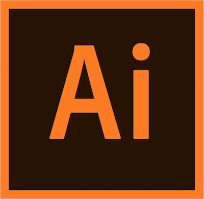
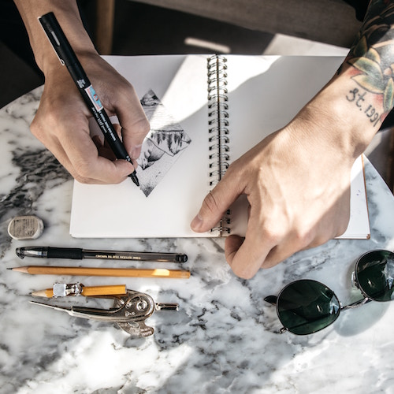

My skills are Coding,Video games,Photoshop,adobe illustrator and I know the littlest bit on how to animate.mainly enjoy photoshop and adobe illustrator but if I were to pick one it would be adobe illustrator its really fun to ues my other skills are sleeping.
My Hobbies vary I love soldering,Creating,Playing Video games, I love spending a lot of time on the internet or the computer,I also watch a lot of youtube, and I enjoy drawing.
 Kaizen NguyễnMy interest are into animations,joining communities I enjoy,watching Youtube,technology,and engineering
KevinI live with my mom and dad along with my older brother that is 18, the rest of my family live pretty close but my mom's side of the family has a lot of members but I don't know most of them and I have a member that also lives in texas.